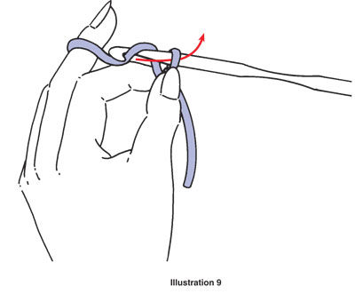

Happy Hookers | Tutorials
New Items

Owl Phone Case
$8.00

Crochet Hooks with Bamboo Handle
$5.00
Basic Slip Knot and Chain Stich
Crochet usually begins with a series of chain stitches called a beginning or foundation chain. A slip knot is the first step in most crochet projects.
We will begin by making a slip knot on the crochet hook about 6 inches from the free end of the yarn. You will first start by creating a loop with the yarn. Be sure that the free end of the yarn is dangling behind your loop (see illustration 3).
Insert the crochet hook through the center of the loop and hook the free end (see illustration 4).
Pull this through and up onto the working area of the crochet hook (see illustration 5).
Pull the free yarn end to tighten the loop (see illustration 6). The loop on the crochet hook should be firm, but loose enough to slide back and forth easily on the hook. Be sure you still have about a 6-inch yarn end.
Once you have the yarn wrapped, hold the base of the slip knot with the thumb and index finger of your left hand.
Step 2: Bring the yarn over the crochet hook from back to front and hook it (see illustration 8). Draw hooked yarn through the loop of the slip knot on the hook and up onto the working area of the crochet hook (see arrow on illustration 9); you have now made one chain stitch (see illustration 10).

Step 3: Again, hold the base of the slip knot and bring the yarn over the crochet hook from back to front (see illustration 11). Hook it and draw through loop on the hook. You have made another chain stitch (see illustration 12). We will repeat Step 3 for each additional chain.
It is important to note that you should always move the left thumb and index finger up the chain close to the crochet hook after each new stitch or two (see illustration 13). This helps you control the work. Also, be sure to pull each new stitch up onto the working area of the hook; otherwise your starting chain stitches will become too tight.
Practice making chains until you are comfortable with your grip of the crochet hook and the flow of the yarn. In the beginning, your work will be uneven, with some chain stitches loose and others tight. While you’re learning, try to keep the chain stitches loose. As your skill increases, the chain should be firm, but not tight, with all chain stitches even in size.